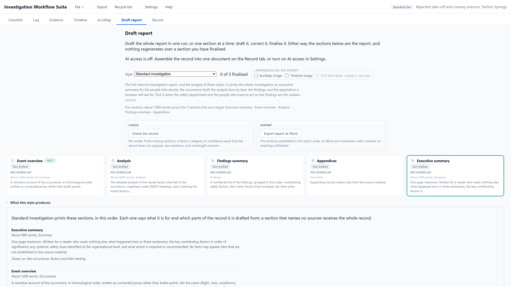

Nothing is sent anywhere
No model is involved. Reports are assembled from the record, and nothing about the investigation leaves the machine.
The investigator creates the investigation record, evaluates the evidence and establishes the findings. AI works downstream of that: it may draft the report from the record and check the draft against it. The investigator then reviews and finalises the result.
AI is optional. With AI access set to No AI, IWS assembles every report from the record and nothing is sent anywhere. The evidence, the tests and the findings are the investigator's in every setting.
The model receives the investigation record, with roles in place of names, and drafts each section under grounding instructions. A second model pass, which the application calls the audit, checks the draft against the record and flags claims it cannot support. It is a semantic check, and like any model output it can miss things. A separate mechanical check then compares factor classifications and confidence language against the underlying tests. It has no model in it, so the same draft always gets the same result.
The investigator reviews the draft, the flagged issues and the underlying record before correcting and finalising the report. The report that gets published is the investigator's, not the model's.
Every object with its tests and confidences, the timeline, the finalised interviews and the evidence, with roles in place of names.
Each prompt instructs the model to use only information in the investigation record, to add no figures or recommendations the record does not carry, and to use the confidence word the test actually produced.
The model check is a semantic pass that flags claims it cannot support from the record, for investigator review. The mechanical check is deterministic: each factor's category and confidence word in the draft against the test that produced it.
Every draft records the model and the version of the record it came from, and is marked out of date when the record changes.
It may fill a gap from general knowledge, round "likely" up to "virtually certain", or write a factor that failed its Influence test back in as contributing. None of that shows in the prose, which is the difficulty: the errors read like the truths. Each control in the pipeline is there for one of them.
| What can go wrong | The control in IWS |
|---|---|
| 1Wording that the evidence does not support, in the same confident voice as the rest. | Grounding rules instruct the model to use only information in the investigation record. A second model pass checks claims against the record and flags material it cannot support for investigator review. |
| 2Confidence language drifting: "very likely" becomes "virtually certain". | The mechanical check compares every confidence word with the test that produced it. |
| 3A factor the investigator excluded written back in as contributing. | The mechanical check compares each factor's category and the findings with the classification derived from the tests. |
| 4Recommendations the investigation never made. | The grounding rules instruct the model to include only the recommendations the record carries, and the mechanical check flags a safety issue drafted with a recommendation the record does not hold. |
| 5A protected report quoted as if it were an ordinary statement, or people named where a role would do. | A protected report is marked in the record, and the model is instructed to let it inform the draft without quoting it. Roles replace names when an interview or transcript comes into the record, before any drafting. |
| 6No record of which model, or which version of the evidence, produced the text. | Each draft records its model and record version, and goes visibly out of date when the record moves on. |
A setting called AI access decides how every Draft action in the application reaches a model. There are three modes, and only one of them makes the application send anything.
No model is involved. Reports are assembled from the record, and nothing about the investigation leaves the machine.
The application builds the prompt and copies it for you to paste into a chat tool you are entitled to use, then takes the reply back. It makes no network call of its own.
The application sends the prompt itself, to the server you have set up and nowhere else:
Consumer AI services should only be used where permitted by your organisation's information-security and data-handling policies. For sensitive investigation material, IWS supports local models and organisation-controlled endpoints so the organisation can determine where its information is processed.
An endpoint is a named profile for one model server: a base URL, a drafting model and a checking model, a protocol, an auth header and a key. The protocol is either the OpenAI-compatible shape, which is what LM Studio, Ollama and most corporate gateways expose, or the Anthropic Messages API.
A key is stored on that machine alone. It never enters the investigation file, never reaches an export, and is stripped out of any error shown on screen.
A drafting run sends the collated record with people referred to by role throughout, because the role replaces the name when an interview or transcript is brought in rather than at the point of drafting. The application has no service of its own, phones nothing home, and sends no telemetry.
Configuration detail, with what to ask your IT department for, is in the user guide: connecting a model.


A late recorder download, a second interview, a maintenance record that turns up in week three: the new information goes into the record, the objects it bears on are retested, and the analysis adjusts around it. A new report is then drafted from the adjusted record in one pass. Nothing starts again from a blank page, and the drafts built on the old record are marked out of date rather than quietly left standing.

The judgement stays with the investigator: every verdict, every confidence and every finding. Where the material goes stays with the organisation: no model at all, a model on the investigator's own machine, or an endpoint it approves.